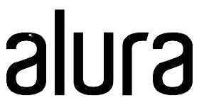
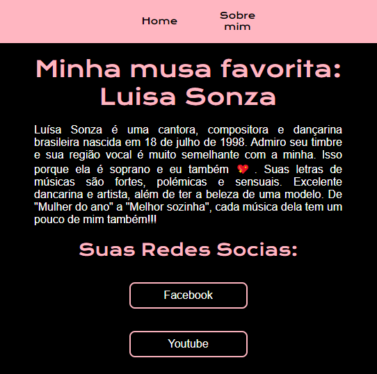
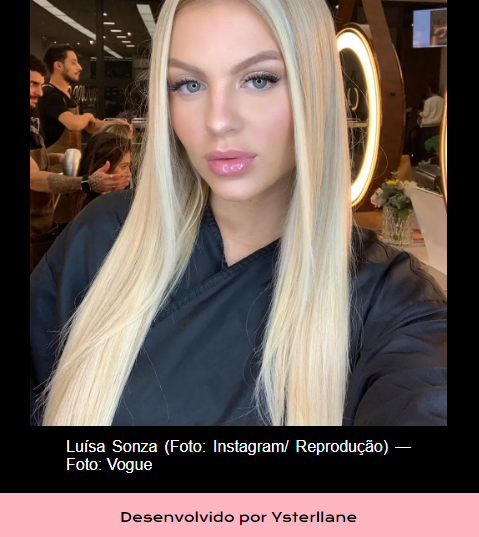

Sobre mim
Ao longo da minha infância e adolescência, sempre busquei uma profissão, meu plano de carreira, uma área; Porém, sempre enfrentei muitas dúvidas na minha jornada, até que em 2022 realizei meu primeiro curso de lógica de programação com a linguagem C++.
A partir desse ponto, conheci a área de tecnologia e me apaixonei, por isso, estou cursando técnico em informática para internt no IFPE campus Belo Jardim. Durante essa caminhada, me identifiquei com a programação e atualmente estou realizando a especialização Front-end da Alura, a partir do programa Oracle Next Education - ONE.
Hard Skils
Html 5
Javascript
CSS
Soft Skils
Liderança
Trabalho em equipe
Inteligência emocional
Comunicação
Formação acadêmica
Cursando técnico em Informática para Internet no IFPE
2023 - 2025 IFPE

Cursando T6 - Front-End Alura
2024 - Alura
Experiência Profissional
Minha Melhor Versão
Primeira aplicação Web


Site da Luisa Sonza
Website de gosto pessoal